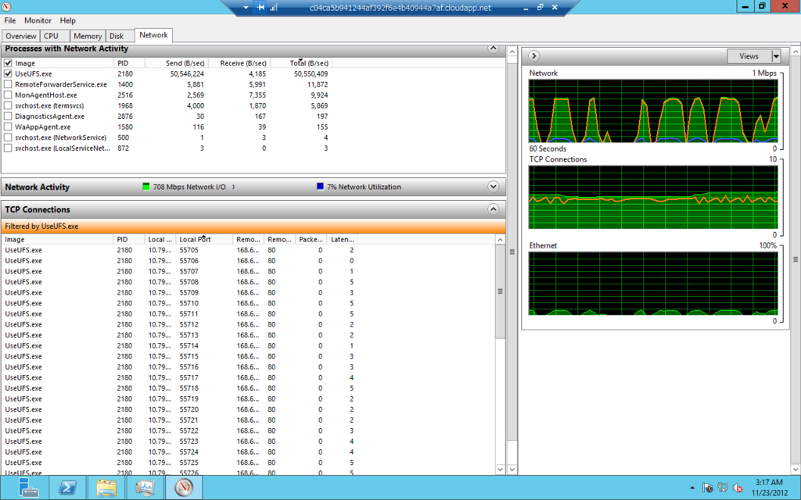

Windows Azure Storage 2.0 の Blob Upload
前の記事 Azure Storage Gen 2は速かった では非同期呼び出しを使っていますが、これには理由があります。 以前（2010年ぐらい）、Windows Azureを使い始めたころにSorage Client 1.xと、.NET Framework 4.0の組み合わせでいろいろ試した時には、スレッドを上げてやったのと非同期にしてやったので比べた時には有意な違いは出ませんでした。非同期でコードを書くと面倒になることも多かったので、「手間の割にはあまりメリットは無いなあ」というのが当時の結論だったのです。
ところが、2012年10月の末にAzure Storage Client 2.0が出てAPIや実装が大幅に変わったので変更点を眺めていたら面白いことに気が付きました。2.0ではBlobの書き込みは、Stream.WriteToSync()でやっていて、そのWriteToSyncの中が非同期呼び出しで実装されているとか、非同期呼び出し数をセマフォを使って制限しているところなどなかなか良さげな実装になっています。
ある日、AzureLargeFileUploader というのがGitHubに上がっているのに気が付いて中を見てみたら、前に読んだSDKの実装に比べても、そんなに優れているようには見えません。「あのコードより2.0の実装の方が大きなファイルでも効率的にUploadできるはず、もしかしたら2.0のコードは壊れているのからこんなことしてるのかな？」と思い2.0のコードを動かして実際に試して見ました。やってみたらなかなか調子が良く2.0の実装では十分な速度でBlobにアップロードされます。
C# 5.0で await/asyc もサポートされ .NET 4.5になってTask周りも改善されて非同期を使うには良い環境が揃ってきていると感じました。それで改めて非同期呼び出しを使ってみることにしました。

試行（やってみた）
Azure Datacenter内にLargeのインスタンスを用意して適当なファイルを元にして8GBのファイルを用意しました。そのファイルを同一のBlobに4回アップロードして平均の速度を測定します。結果は、 ** 平均473Mbps ** でした。これは、ほぼインスタンスのネットワーク帯域制限値と同じです。なかなか良い結果と言えます。
確認に使ったコード、（メッセージがドイツ語になっているのは、AzureLargeFileUploader の名残です）
このコードのポイントは下記の3点です。
- 18行目ので接続数の制限を1024に設定していること
- 59行目で並列度の設定をコア数の12倍にしていること
- 55,56行目ではPage/Block Blobのどちらを使うかを切り替えていること
接続が作れないと並列度が上がらないのでDefaultConnectionLimitを増やし、Storage Client 2.0ではParallelOperationThreadCount のデフォルトが1になっているのでコア数の12倍に設定します。 Storage Client 2.0では、55, 56行目のように切り替えるだけで、どちらでも並列アップロードができるようになっています。1.xのときは、UploadFromStreamを使った時にBlock Blobでしか並列アップロードがサポートされてなかったことに比べて改善されています。
アップロード中をリソースマネージャーで観察するとコネクションが数多く作成されているのが確認できます。右側のNetworkトラフィックのグラフが波打っているのが興味深いところです。ピーク時に600-700Mbps程度行くこともありますが平均すると470 Mbpsという結果でした。CPUは5-10%程度しか使われていませんし、メモリーも開始から終了までほぼ一定です。なかなか優秀です。

** ここからは、ソースを見ながら確認していった過程のメモです。リンクばかりで分かり辛いかもしれませんが参考までに。興味深いのは非同期と同期の処理の境界と並列度の制限をしている部分です。 **
どうしてこんなところが変わったの？ ParallelOperationThreadCount のデフォルト値
1.x では
CloudBlobClientに、ParallelOperationThreadCount というのがあります。１系では、下記のように定義されていました。
StorageClient/CloudBlobClient.cs#L261
試しに、下記のようなコードでioThreadsを確認したところデスクトップPCでは２，Azure上のLargeのインスタンスでは４でした。どちらの環境でもデフォルトでParallelOperationThreadCountが２以上になり並列で動作します。
2.0 では
それに対し、２系では下記のように定義されています。parallelismFactorは、47行目付近で1で初期化されておりデフォルトは1となります。
これからParallelOperationThreadCount のデフォルトが1に変わったことがわかります。これは、 Windows Azure Storage Client Library 2.0 Breaking Changes & Migration Guide にも書いてあるBreaking Changesです。
2.0に移行した後、Block Blobのアップロードが遅くなった場合はParallelOperationThreadCountを確認するといいかもしれません。
ParallelOperationThreadCountの使われ方
1.xでは、ParallelOperationThreadCount は、ParallelUpload で並列度の定義になっています。このクラスは、Streamをblock blobにUploadするもので、BlobClient.UploadFromStreamを、Block blobで使った時しか使われません。** Page Blobでは並列アップロードは実装されていません。 ** おそらく、SDK 1xではPage Blogのパラレルアップロードをサポートしていないので、AzureLargeFileUploader を用意したのだと思います ** あのソースだけだと分からないですが
ParallelExecute あたりの処理をみると、Block毎にTaskを上げているらしいことがわかります。 ParallelUpload.cs#L148
2.0.1では、CloudBlockBlob のUploadFromStreamは、並列処理をするときにはStreamの拡張メソッドのWriteToSyncを呼んでいます。 CloudBlockBlob.cs#L116
同期と非同期の境界
WriteToSyncの実装は下記のようになっています。 StreamExtensions.cs#L64
ちょっと見ると、WriteToSyncは、読み込み側のStreamを非同期で読み出すためのフラグをもっているだけで書き込みは同期していて、並列動作しないような感じです。これだと、ParallelOperationThreadCountに2以上をセットしてもパラレルアップロードは行われないのかな？と思いますが、その先のtoStream.Write の実装を見ると内部が非同期に処理されています。
toStreamの実態は、BlobをStreamとして扱うBlobWriteStreamのインスタンスで、これは内部的に非同期で書き込みを行います。
呼び出し側を見ると同期処理のように見えるが、BlobWriteStreamBase で、AsyncSemaphore parallelOperationSemaphoerをParallelOperationThreadCountの数で初期化しており、ストーリーム内のブロック書き込みは非同期に行われています。
この設計はなかなかイイ。
非同期実行数の制限
ここで、AsyncSemaphoreは、既定の数以上に処理が実行されないように非同期実行数を制御している役割を果たしている。
BlobWriteStreamでは、書き込みが全部終わると、最後に PutBlockList して終了する。同様な処理がPage Blobにも用意されていて並列アップロードされるような実装になっている。
このあたりは、 What’s New in Storage Client Library for .NET (version 2.0) に書いてある説明通りの実装になってるようだ。
結論
Blobのアップロードのような I/O がボトルネックとなるような処理ではI/O の非同期を使うことでCPU、メモリの負荷を最低限にして効率的に処理をすることができる。このコードでは、Stream 書き込みの内部処理を非同期化することで全体のパフォーマンスを向上しプログラミングモデルへの影響は最低限にしている。 サーバーサイドのプログラミングではこのような、同期、非同期の境界を発見して設計することが重要だと言える。非同期実行数の制限もなかなか興味深い。
おまけ
LargeのRoleからStorageにUploadしたら450Mbps程度の速度が出た。ローカルからも、20Mbps程度だったので結構速い。転送中を見ていると、しばらくは複数のコネクションを使ってデータ転送していて最後にコネクションが一本になって終わる。、
PutBlobを非同期でやって最後にPutBlobListで終了となってるようだ。PutBlobの処理中はCPUはほとんど使われずに、ネットワーク帯域がボトルネックになっるぐらいには効率がいい。最後のPutBlobListの間はStorage側の待ちになってしまう。
これを考えると、複数のファイルをUploadする場合は、スレッドを分けて個々に処理した方が短時間で終わるのではないかと考えられる。ただ、あまり多くのスレッドを起動するメリットは無さそうだ。
今回は、UploadFromStreamを使ったが下記の説明にはOpenWriteを使うとStreamのように処理できると書いてある。やってみたら同じように動いた。つまりBlobをStreamとして使えるってことだ素晴らしい。